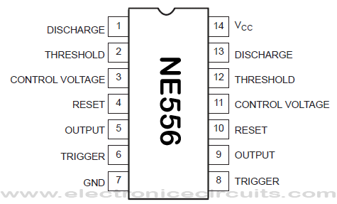
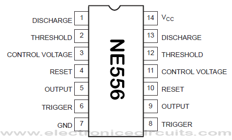
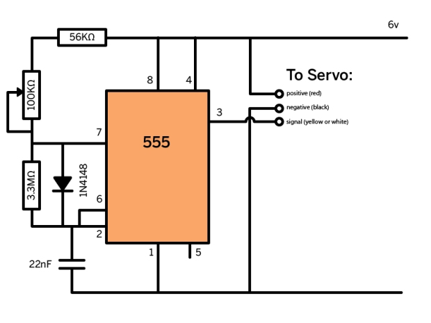

This workshop is intended to introduce analog electronics as a way of creating sound for small puppets and a jumping off point for more complex analog based projects. Arduino and other microcontrollers are great for testing things and making complex circuits, but can be a little bit pricey and a little more than necessary for simple projects like little toys or puppets. This workshop will introduce the idea of using small cheap components to make an audio circuit, which could also be applied to motors lights or other electronic and interactive components. We can build the guts of a toy or puppet with two simple circuits.
We will be using the 556 timer chip, which is actually two 555 chips put together. 555 timers create oscillations by measuring time using capacitors and using variable resistance to change the rate of the oscillation and pitch of the tone. The following video demonstrates the principle behind a 555 timer.
555 timers are used for all sorts of applications, like windshield wipers, blinking lights and analog sequencers and are available for 50 cents online.
Click here for a full explanation of the 555 integrated chip.
In the first part of our workshop we will make an audio circuit to be the voice of the puppet:

I chose it because it is very simple and allows for easy modification of the sound. I made a couple of modifications to use more easily available parts.
Components needed
Tools: Multimeter, triangle cutter, wire stripper, pliers.
Set up bread board.
 

The result is something like this:
In the second part of our workshop we will build a circuit to control a servo motor. This simple back and forth motion can be the head movement, leg movement or arm movement of a character.
Most of the components in this circuit are ones we are already familiar with. A new component is the diode. Lets take a look at diodes:
The circuit we will use for this is borrowed from Make Magazine online:
Components
Let's try building this circuit onto the other side of the 556 the way we made the audio circuit.